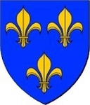
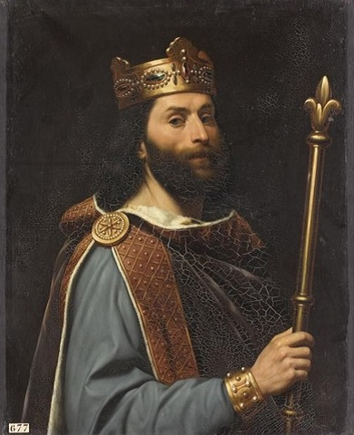

1046534336752 Greve Siegfrid I von Luxenburg
* mellan 919 och 922 Verdun, Frankrike
† 998 Triere, Rheinland-Pfalz, Tyskland
Greve av Ardennerna + Luxenburg
Blev högst 79 år
* mellan 919 och 922 Verdun, Frankrike
† 998 Triere, Rheinland-Pfalz, Tyskland
Greve av Ardennerna + Luxenburg
Blev högst 79 år
2093068673504 Greve Wigeric von Lothringen
* omkring 890 Frankrike
† 939 Echternach, Rhenlandet, Preussen
Greve av Hainault, Hertig av Lothringen
Blev ca 49 år
* omkring 890 Frankrike
† 939 Echternach, Rhenlandet, Preussen
Greve av Hainault, Hertig av Lothringen
Blev ca 49 år

2093068673505 Grevinna Cunigunde of France
* omkring 895 Aachen, Cologne, Tyskland
† mellan 930 och 940 Aachen, Cologne, Tyskland
Grevinna av Trier & Ardennerna
Blev ca 44 år
* omkring 895 Aachen, Cologne, Tyskland
† mellan 930 och 940 Aachen, Cologne, Tyskland
Grevinna av Trier & Ardennerna
Blev ca 44 år
4186137347010 Evrard Sulichgau di Friuli
4186137347011 Princess Ermentrude de France
* omkring 875 Paris, France
† omkring 935 Aachen, Cologne, Tyskland
Prinsessa av Westfrankerna, Hertiginna av Friuli
Blev ca 60 år
* omkring 875 Paris, France
† omkring 935 Aachen, Cologne, Tyskland
Prinsessa av Westfrankerna, Hertiginna av Friuli
Blev ca 60 år

8372274694022 King Louis II "The stammerer"
* 846 Frankrike
† 879 Picardy, Frankrike
Kung av West Frakerna
Blev högst 33 år
* 846 Frankrike
† 879 Picardy, Frankrike
Kung av West Frakerna
Blev högst 33 år
8372274694023 Queen Ansgarde de Burgund (Bourgogne)
* France
† efter 879 France
Drottning av Akvitanien
* France
† efter 879 France
Drottning av Akvitanien